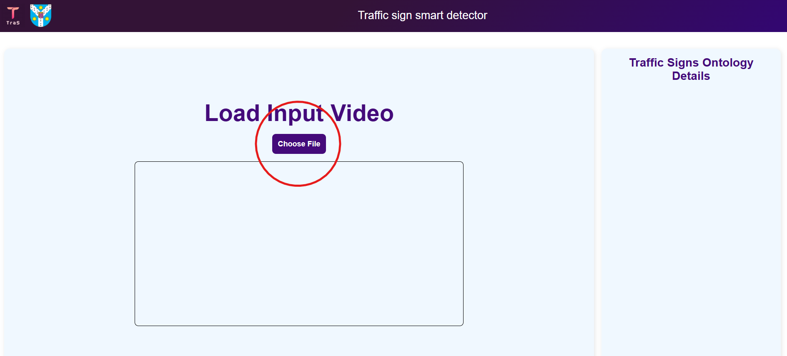
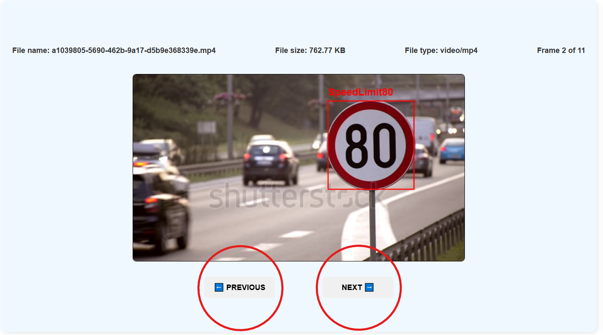
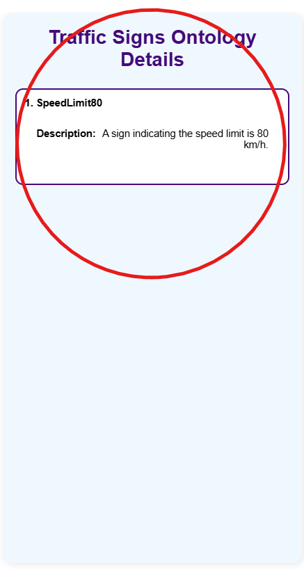
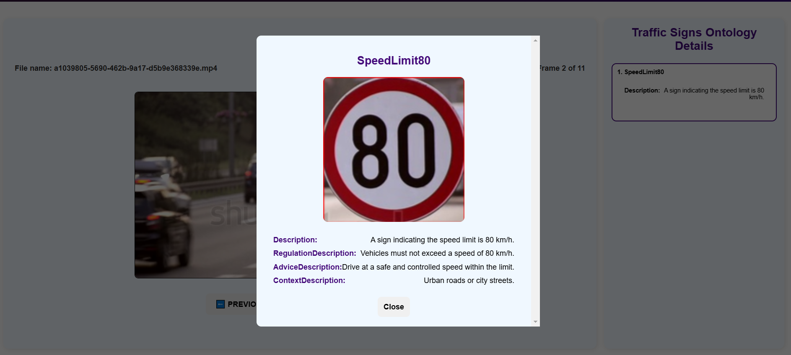

TraS User Guide
Version: 1.0 | Last Updated: 2025
1. Introduction
TraS (Traffic Sign Recognition System) is a Machine Learning-powered tool designed to detect traffic signs in uploaded videos. The system provides a simple and intuitive interface, allowing users to analyze traffic sign data effectively.
2. Application Interface
The application consists of a single-screen layout for user convenience. Below are the key components:
- Left Panel: Displays the uploaded video with detected traffic signs highlighted.
- Right Panel: Lists detected traffic signs, allowing users to click for more information.
- Frame Navigation: Two buttons under the video allow users to navigate through frames.
3. Uploading a Video
- Click the Upload Video button.
- Select a video file from your device.
- The system will process the video and display the detected traffic signs.

4. Viewing Detected Traffic Signs
- Once the video is processed, the left panel will display the video with traffic signs highlighted.
- Users can navigate frames using the Next Frame and Previous Frame buttons.

5. Traffic Sign Information Panel
When a user clicks on a detected traffic sign in the right panel, the system displays relevant information, including:
- Regulation: e.g. Legal things to do when encountering the sign.
- Advice: Recommandations besides the legal things.
- Context: Where can the sign be encountered.


6. Summary
TraS provides an easy-to-use platform for analyzing traffic signs in video data. By following this guide, users can effectively navigate the interface, upload videos, view detections, and access detailed information.